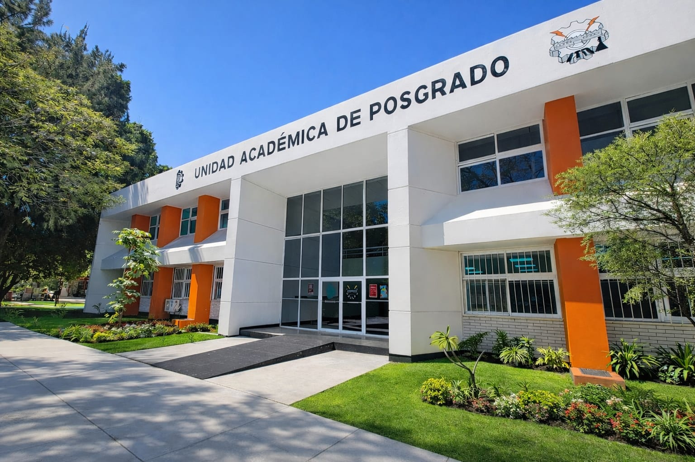

La Maestría en Ciencias de la Ingeniería del Instituto Tecnológico de Oaxaca es un posgrado con distinción del SNP, orientado a la investigación, cuyo propósito es formar personas con los conocimientos científicos y tecnológicos necesarios para el desarrollo de soluciones innovadoras a problemáticas prioritarias del país, con impacto y pertinencia social.
Formar personas altamente capacitadas en Ciencias de la Ingeniería con los conocimientos científicos y tecnológicosnecesarios para proponer y desarrollar soluciones tecnológicas innovadoras orientadas a la atención de problemáticas prioritarias del país, con enfoques multidisciplinarios e interdisciplinarios y bajo un marco de igualdad sustantiva, compromiso social y contribución al fortalecimiento de las capacidades científicas y tecnológicas nacionales.
Ser un programa de excelencia en Ciencias de la Ingeniería, reconocido por su liderazgo en investigación,innovación y transferencia tecnológica, así como por su contribución al fortalecimiento de las capacidades científicas y tecnológicas nacionales con impacto y pertinencia social.
Formar maestros en Ciencias de la Ingeniería con competencias científicas y tecnológicas para desarrollar investigación básica y aplicada orientada a la generación de soluciones innovadoras para problemáticas prioritarias del país, con enfoque multidisciplinario, transferencia tecnológica y pertinencia social.